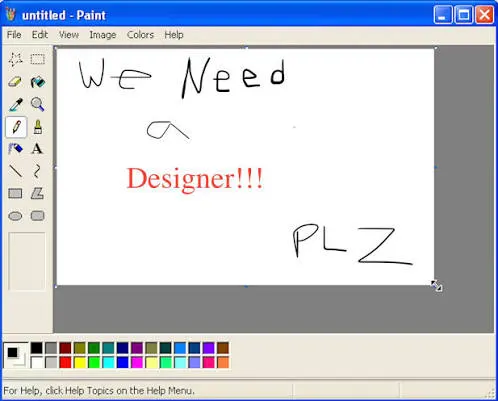
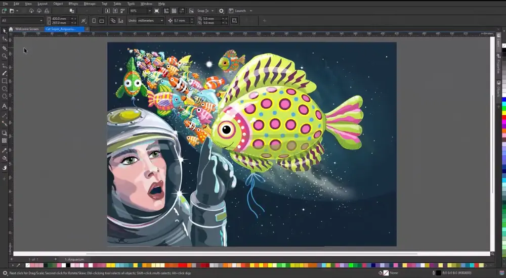
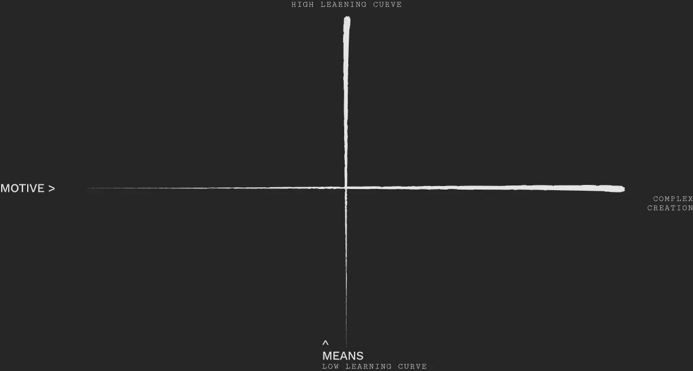
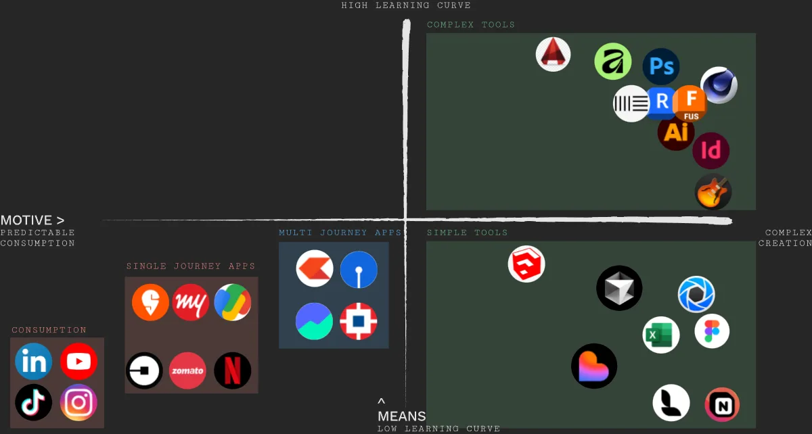
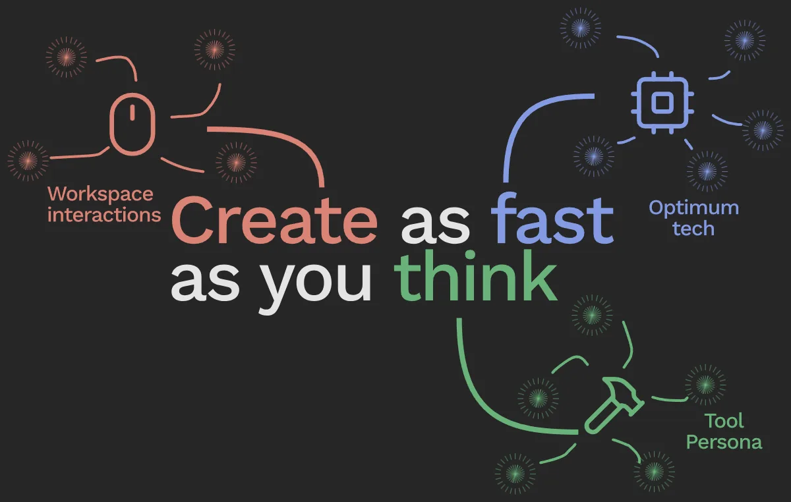

Would you trust a tool with your livelihood if it only needed a few minutes to master?
Yes the UI has needs to be simple. But..
Let's take an example of Microsoft Paint. A tool of just a few minutes of learning curve...

Microsoft Paint — learnable in minutes, and that is exactly its ceiling.
Paint is simple. But you never see a designer working on it.
Is it then too simple? So what's the industry standard?

CorelDraw: Difficult but the entire print industry stands by it
CorelDraw does not shy away from its weeks of learning curve.
So the simplification of UI is not the answer to efficiency
Let's plot the digital interfaces we use on a 2 axis

What would be timeless digital design?
So here are the axis
Complexity of motive on X-axis and means on Y-axis
Now let's add some examples for it to make sense

Digital assets, plotted.
Left area
- India works in this sector a lot.
- A lot of work available as references.
- Solves simple, linear problems.
**Summary of apps**
Tools area
- India usually don't work on this. Except a few.
- Every tool is distinct and intricate for professional use.
- Potential for use to solve complex problems.
**Summary of tools**
So..What are digital tools?
How are they different from the left hand side artifacts
And how to make them
Here's what I've found out.
What should be a tool?
Tool criteria
- Should have a complex motive.
- Have a longer than 10 minutes of usage journey.
- User should create an output like 3d model, note, image etc.
Principles of Digital tools

Themes of principles
And my learnings goes on
The digital double of my research board. Open in Figma